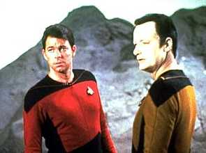
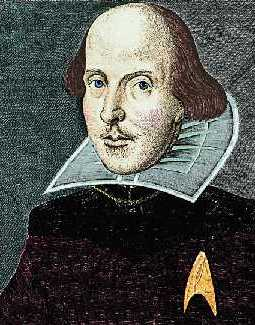
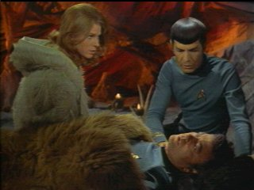
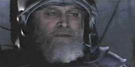
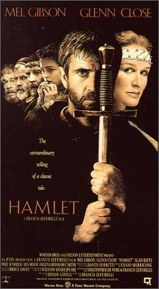
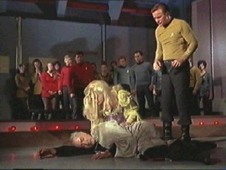
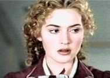

|

Texto de
Susana
Lopes de Alexandria
Macbeth e Hamlet
inspiram dilogos

|
 O episdio "Hide and Q" trata de grandes questes, como a natureza ambiciosa do ser humano, que est sempre em busca da superao de seus limites, e o perigo do poder absoluto - como o poder concedido a William Riker pela entidade Q. Para expressar e ilustrar essas grandes questes, nada como recorrer a um grande autor como o dramaturgo e poeta ingls William Shakespeare, que teve seus versos citados por Q, pelo capito Picard e pelo andride Data."A vida uma histria contada por um louco, cheia de som e fria, significando nada" O primeiro a citar Shakespeare foi Q. No gabinete do capito, sentado em sua cadeira e com um volume das obras completas de Shakespeare nas mos, Q tenta convencer Picard de que a vida humana "uma histria contada por um louco, cheia de som e fria, significando nada". Esses versos so da pea Macbeth, que trata de questes como o poder, a cobia e a loucura. Vamos fazer um breve resumo da histria para saber exatamente de qual cena e de qual contexto essas palavras foram retiradas. Quando Duncan era rei da Esccia, l vivia um baro chamado Macbeth. Parente prximo do rei e muito estimado na corte por suas habilidades nas guerras, Macbeth derrotara ainda recentemente um exrcito rebelde poderosamente auxiliado pelas tropas da Noruega. No caminho de volta dessa grande batalha, os dois generais escoceses Macbeth e Banquo foram surpreendidos pela apario de trs bruxas que, alm de lhes chamarem pelo nome, fizeram espantosas profecias: Macbeth seria rei da Esccia, mas os descendentes de Banquo que herdariam a coroa. Depois disso, as bruxas dissiparam-se no ar.  Macbeth tinha uma esposa, Lady Macbeth, a quem comunicou o estranho acontecimento. Mulher m e ambiciosa, convenceu o hesitante marido de que o assassnio do rei era um passo absolutamente necessrio para a realizao da profecia. Aproveitando a presena do rei Duncan, que, junto com seus filhos Malcolm e Donalbain, passaria a noite em seu castelo, o casal Macbeth decidiu pr em prtica seu diablico plano. Macbeth estava vacilante, mas, incitado pela mulher, foi at o quarto de Duncan e o matou com a primeira apunhalada. Na manh seguinte o crime descoberto e, apesar das demonstraes de pesar do casal anfitrio, caem sobre Macbeth as suspeitas do crime. Os filhos do rei assassinado, Malcolm e Donalbain, temendo uma conspirao, fogem do pas. Tendo assim desertado os sucessores naturais do rei, Macbeth coroado como herdeiro imediato e desse modo cumpriu-se literalmente a previso das bruxas. Entretanto, Macbeth e a rainha no se esqueceram da outra parte da profecia das feiticeiras, segundo a qual os filhos de Banquo, e no os seus, reinariam depois dele. Macbeth prepara ento um banquete para homenage-los, mas manda assassinos contratados mat-los numa emboscada. Banquo morre, mas seu filho Fleance consegue escapar. Isto provoca acessos em Macbeth, que durante a recepo deixa escapar palavras comprometedoras por ser atormentado pelo espectro de Banquo. Perseguido por alucinaes, Macbeth decide consultar as bruxas novamente. As entidades o advertem para se prevenir contra o baro de Fife. Macbeth, que j estava desconfiado de Macduff, baro de Fife, agradece a advertncia. Informado em seguida de que Macduff fugira para a Inglaterra onde, junto com Malcolm, liderava um exrcito cedido pelo rei, Macbeth se vinga, mandando matar sua mulher e seus dois filhos, estendendo a carnificina a quantos se gabassem do menor parentesco com Macduff. Este, ao receber tal notcia, apressa a volta Esccia, ansioso por vingana. Macbeth vai perdendo pouco a pouco os aliados, horrorizados com tantas atrocidades. Enquanto isso, a rainha, sua nica scia no mal, perde a sanidade, atormentada pela culpa, at que morre. Ao receber a notcia, Macbeth pondera, num amargo monlogo, sobre o aspecto frgil e efmero da vida. desta cena, uma das passagens mais famosas da pea, que Q cita para Picard.
|

O leitor atento vai perceber que o ttulo do episdio "All Our Yesterdays" ("Todos os Nossos Ontens") da Srie Clssica tambm foi retirado deste trecho.
Concluindo, Macbeth agora est quase s. Comea a desprezar a vida e a desejar a morte. Mas a aproximao do exrcito de Macduff desperta nele a velha coragem e ele decide morrer lutando. o que realmente acontece. Aps um violento combate pessoal, Macbeth derrotado por Macduff, que lhe corta a cabea e a oferece de presente ao jovem e legtimo rei, Malcolm.
Como se viu, as palavras citadas por Q foram proferidas na pea de Shakespeare por Macbeth, um personagem amargurado pela solido e pelo horror, circunstncias criadas por ele mesmo.
"S fiel a ti mesmo"
Mas Picard, profundo conhecedor da obra de Shakespeare, rebate Q citando Hamlet, outra tragdia de Shakespeare. Alm de Picard, o prprio Q e o andride Data tambm citam trechos desta tragdia. Novamente, vamos ver exatamente de que contexto estas citaes foram retiradas.
A pea conta a histria do jovem Hamlet, prncipe da Dinamarca, apaixonado pela jovem Oflia, filha de Polnio, velho conselheiro de Estado, e irm de Laertes, amigo do prncipe.
A histria comea com o tormento de Hamlet com a morte de seu pai, rei da Dinamarca, e pelo anncio do casamento da viva, sua me, com seu tio Cludio, irmo do falecido rei, menos de dois meses aps sua morte. Tendo quase certeza de que o pai fora assassinado por Cludio, seu prprio irmo, Hamlet nem sequer compareceu ao casamento da me, cujo comportamento lhe parecia inaceitvel.
Enquanto isso, seu amigo Laertes, irmo de Oflia, decide deixar a Dinamarca e partir para a Frana. Seu pai, Polnio, lhe d vrios conselhos no dia de sua partida, entre os quais o mais importante: "This above all - to thine own self be true" (Acima de tudo - s fiel a ti mesmo - Ato I, cena 3). Foi este conselho que o andride Data seguiu - e citou literalmente, dizendo ser as palavras do autor preferido do capito Picard - quando recusou a oferta de Riker para tornar-se humano.
"Que obra de arte o homem!"

Algum tempo depois, chega aos ouvidos de Hamlet o rumor de que um fantasma parecidssimo com o finado rei, seu pai, fora visto por guardas do palcio, meia-noite, duas ou trs noites seguidas. Horcio, amigo ntimo de Hamlet, confirmou a apario, pois tambm o havia visto. Assombrado pelo relato, Hamlet decidiu montar guarda com os soldados, pois, pensou consigo, um fantasma no aparece toa, mas deve ter algo a dizer. Quando veio a noite, postou-se de guarda com Horcio e Marcelo, um dos soldados, sobre a plataforma onde o espectro costumava aparecer. De repente, receberam o aviso de Horcio de que o fantasma estava chegando.O espectro ento chama Hamlet, que se mostra cauteloso a princpio. Gradativamente, porm, Hamlet perde o medo e segue o fantasma para um lugar mais afastado. Quando esto a ss, o esprito confessa que o

fantasma de seu pai, cruelmente assassinado por Cludio, tio de Hamlet, que pretendia suced-lo em sua cama e em seu trono, exatamente como o jovem prncipe havia suspeitado. Um dia em que estava dormindo no jardim, como era seu hbito, o irmo traioeiro veio sorrateiramente e verteu um veneno terrvel em seus ouvidos. Assim, o rei morreu dormindo. Agora, ele queria ver sua morte vingada pelo filho. Hamlet prometeu seguir as instrues do espectro, que logo desapareceu.Hamlet ficou transtornado com a apario do pai e temeu que seu comportamento levantasse a suspeita do tio. Hamlet resolveu ento fingir, a partir daquele momento, que havia ficado louco, pois assim Cludio no perceberia que o jovem prncipe estava tramando algo contra ele. A pretensa loucura de Hamlet preocupou sua me, que mandou chamar dois amigos do filho, Guildenstern e Rosencrantz, a fim de lhe fazerem companhia e lhe trazerem um pouco de alegria.
Hamlet, entretanto, aps a terrvel revelao do fantasma de seu pai, no via graa em mais nada na vida e no acreditava mais nos homens. At mesmo o amor de Oflia ele agora neglicenciava, pois julgava que a rude tarefa a que se propusera - vingar a morte de seu pai - no condizia com a futilidade da paixo. Foi numa conversa com seus dois amigos, Guildenstern e Rosencrantz, que Hamlet disse as palavras citadas pelo capito Picard a Q:
|
I have of late - but wherefore I know not - lost all my mirth, forgone all custom of exercises; and, indeed, it goes so heavily with my disposition that this goodly frame, the earth, seems to me a sterile promontory; this most excellent canopy, the air, look you, this brave o'erchanging firmament, the majestical roof fretted with golden fire, - why, it appears no other thing to me than a foul and pestilent congregation os vapours. |
Ultimamente - embora eu no saiba por qu - no tenho sentido alegria e abdiquei de meus exerccios costumeiros; na verdade, isto est afetando tanto minha disposio que esta bela estrutura, a Terra, no me parece mais do que um promontrio sem vida; este excelente vu que nos protege, o ar, vejam s, este bravo firmamento, teto majestoso riscado pela luz dourada, - bem, no me parece mais do que uma congregao de vapores pestilentos. |
|
What a piece of work is a man! |
Que obra de arte o homem! |
|
how noble in reason! |
como nobre em entendimento! |
|
how infinite in faculty! |
como infinito em suas faculdades! |
|
in form and moving how express and admirable! |
na forma e no movimento como rpido e admirvel! |
|
in action how like an angel! |
em ao como um anjo! |
|
in apprehension how like a god! |
na compreenso como um deus! |
|
the beauty of the world! |
a beleza do mundo! |
|
the paragon of animals! |
o modelo de perfeio dos animais! |
|
And yet, to me, what is this quintessence of dust? |
E no entanto, para mim, o que essa quintessncia do p? |
|
man delights not me; no, nor woman either |
o homem no me deleita; nem tampouco a mulher |
Hamlet est sendo irnico quando faz esses elogios ao homem, pois o jovem estava num estado de profunda decepo em face das revelaes feitas pelo fantasma de seu pai. por isso que o capito, quando cita este trecho da pea para Q, afirma que o faz com convico, embora Hamlet tenha sido irnico. Q fica irritado com esse orgulho de Picard pela humanidade e lhe atira o pesado livro com as obras completas de Shakespeare.
"A pea a coisa"
Guildenstern e Rosencrantz lamentam o estado de melancolia de Hamlet, dizendo que ento ele no seria capaz de divertir-se com uma companhia teatral que os dois haviam encontrado no caminho e que estava chegando para entret-lo. A companhia era a mesma que j os visitara outras vezes no passado.
Foi ento que Hamlet teve uma brilhante idia. Ouvira dizer que criaturas culpadas, assistindo a uma pea, so to profundamente tocadas pelas cenas que acabam confessando todos os seus crimes. Apesar do desejo de vingana, Hamlet considerava odioso o ato de tirar a vida de um semelhante, principalmente pelo fato de tal pessoa, apesar de assassino e usurpador, ser o marido de sua me. Alm disso, ainda lhe atormentavam o esprito algumas dvidas sobre o espectro. E se ele fosse o diabo? Diziam que o diabo tinha poder de assumir vrias formas. E se ele assumira a forma de seu pai e, aproveitando-se de sua fraqueza e melancolia, viera arrast-lo ao assassnio?
Pediu ento ao diretor da pea que inclusse na apresentao daquela noite algumas falas que ele havia escrito. Na verdade, o que ele queria que fosse representada uma cena parecida com o assassnio do pai, para que ele pudesse observar as reaes do rei, seu tio. A pea seria a coisa com ele pegaria a conscincia do rei.|
The play's
the thing |
A pea
a coisa |

Q tambm cita esta passagem, querendo dizer que seria atravs da "pea" ou do jogo que estava jogando com Riker que ele pegaria a conscincia do comandante, ou seja, era atravs do jogo que saberiam se Riker resistiria ou no tentao de utilizar os poderes concedidos a ele por Q. Quem tambm f da Srie Clssica, j deve ter percebido que foi desta passagem que retiraram o ttulo do episdio "The Conscience of the King" ("A Conscincia do Rei"). Como se viu no episdio "Hide and Q", a "pea" quase "pegou a conscincia" de Riker. Entretanto, o comandante percebeu a tempo o quanto seu comportamento estava sendo ridculo.
O rei Cludio, por sua vez, caiu na armadilha armada por Hamlet: assim que viu a cena do assassnio na pea, mudou de cor e, simulando ou talvez sentindo sbito mal-estar, deixou o teatro. Com a sada do rei encerrou-se a representao da pea. Hamlet todavia vira o suficiente para convencer-se de que o fantasma dissera a verdade. Antes, porm, que o prncipe pudesse elaborar seu plano de vingana, foi chamado pela rainha para uma conferncia particular. A rainha convocara o filho, a pedido do rei, com o intuito de dizer-lhe o quanto desapontara a ambos seu recente comportamento. Querendo saber tudo o que se passaria na conversa, o rei ordenou a Polnio, seu conselheiro e pai de Oflia, que se escondesse atrs das cortinas da alcova da rainha, de onde poderia ouvir tudo sem ser visto. Hamlet comeou a discutir com a me, condenando seu comportamento leviano para com a memria de seu pai, quando, de repente, percebeu algum atrs das cortinas. Pensando tratar-se do rei, fincou sua espada no conselheiro, matando-o.
A desgraada morte de Polnio forneceu ao rei pretexto para afastar o prncipe do reino. Mandou-o Inglaterra,
com dois guarda-costas, alegando fazer isto para sua prpria segurana. No caminho, porm, Hamlet descobriu que o rei ordenara que o matassem assim que l pusesse os ps. Livrou-se, ento, dos guardas e retornou Dinamarca. L chegando, deparou com o funeral de Oflia, sua amada, que, ensandecida pela morte do pai, havia se afogado no rio. O irmo da moa, Laertes, ao reconhecer Hamlet, causador da morte de seu pai e de sua irm, agarrou-lhe o pescoo, como a um inimigo, at que os presentes os separassem. Concludo o sepultamento, Hamlet foi desculpar-se com Laertes e os nobres jovens pareceram reconciliar-se. No entanto, aproveitando-se da dor e da ira de Laertes, o rei Cludio viu a uma oportunidade para eliminar o sobrinho. Persuadiu o irmo de Oflia, a pretexto de celebrarem a reconciliao, a propor a Hamlet um torneio de esgrima. Depois de tudo acertado, o rei convenceu Laertes a usar uma espada envenenada. A disputa ento comeou e, passados alguns minutos, Laertes feriu Hamlet com sua espada. Sem saber do plano malfico para elimin-lo, na confuso da luta Hamlet trocou sua arma inocente pela lmina mortal de Laertes e, num bote, desferiu um golpe no adversrio. O feitio, assim, virou-se contra o feiticeiro. Nesse instante, a rainha gritou que fora envenenada. Inadvertidamente, bebera de uma taa que o traioeiro Cludio havia preparado para Hamlet, caso a espada de Laertes falhasse. Vendo a rainha cair morta na sua frente, Hamlet ordenou que todas as portas fossem fechadas para que se pegasse o assassino. Laertes ento disse que aquilo no seria necessrio - e, sentindo que sua vida se esvaa pelo ferimento recebido, confessou a infmia que praticara e que tambm o vitimara. E, pedindo perdo, morreu, no sem antes acusar o rei de ser o mentor de toda a trama. Hamlet, vendo que seu fim tambm se aproximava, voltou-se repentinamente contra o prfido tio e trespassou-lhe o corao com a espada envenenada, cumprindo assim a promessa que fizera ao espectro de seu pai de matar seu assassino. J moribundo, voltou-se para o amigo Horcio, que assistira fatal tragdia, pedindo-lhe que contasse a todos a sua histria. Dito isso, seu corao cessou de pulsar.